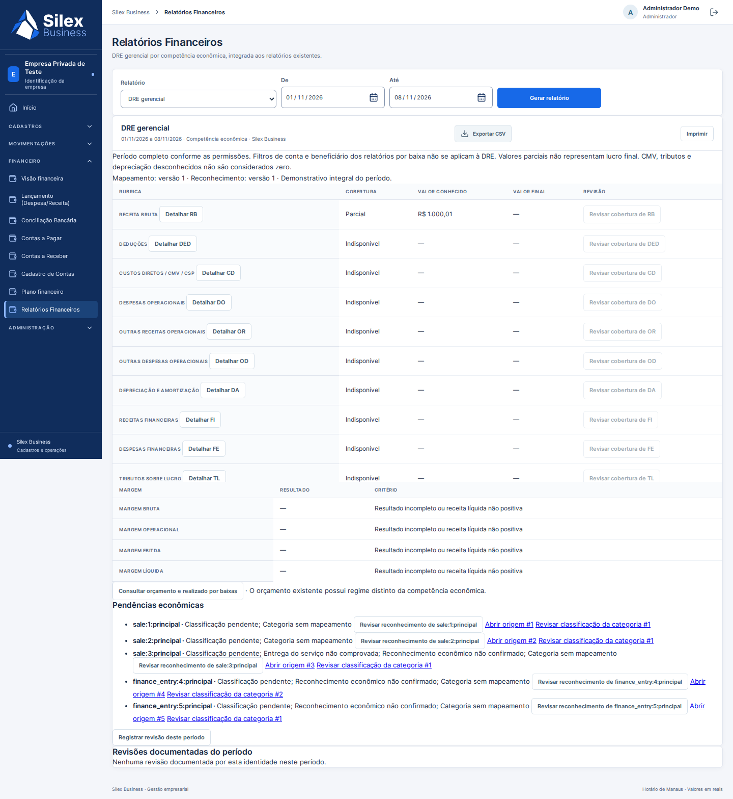

Navegadores reais, dados sintéticos e banco descartável. Não é a instância Railway. A geração PDF é Chromium; não houve impressão física ou homologação assistiva.
PDF A4 retrato, fontes e pendências completas · Relatório · Resultados e baterias interrompidas
